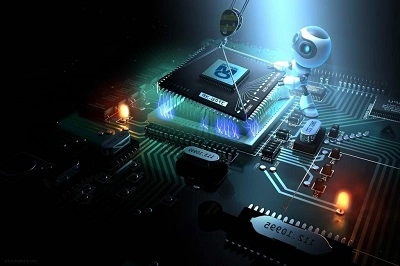

Номер: 172
Назва спеціальності:
Електронні комунікації та радіотехніка

Бакалаври з освітньої програми “Програмування та кіберзахист
інфокомунікацій ” зі спеціальності 172 “ Електронні комунікації та
радіотехніка ” готуються для роботи в галузі проектування та
обслуговування комп’ютерних систем і мереж і їх кіберзахисту та
програмування. Це поєднання знань та вмінь програмування і
функціонування приладів та систем в галузі Інформаційних
технологій та телекомунікацій, що направлені на обробку та
передачу будь-якої інформації. Наша програма визначається чотирма
словами - що повністю визначають її направленість:
інфокомунікації, інженерія, програмування та кіберзахист. Цілі
навчання: підготовка фахівців, здатних самостійно використовувати
і впроваджувати технології телекомунікаційних мереж та систем.
Оволодіння знаннями та навичками у сфері захисту інформації,
кібербезпеки та криптографії, зокрема, розуміння методів
інформаційної безпеки, управління доступом до даних, виявлення та
вирішення проблем безпеки інформації. Отримання знань та навичок у
сфері проектування, розробки та експлуатації телекомунікаційних
систем і мереж, включаючи супутникові та мобільні мережі, Інтернет
та VoIP-системи. Розвиток у студентів здатності до аналізу та
вирішення складних проблем у сфері програмування та кібербезпеки,
в тому числі, розробки та впровадження нових технологій та
інновацій. Підготовка студентів до роботи в галузі програмування
та кібербезпеки, зокрема, до роботи в IT-компаніях, банках,
державних установах та інших організаціях, які потребують фахівців
з цих сфер. Оволодіння навичками збору, обробки та передачі
інформації, в тому числі, управління каналами передачі даних,
оптимізація транспортних протоколів та інших аспектів
телекомунікацій. Формування вмінь та навичок у сфері вибору,
застосування та налагодження телекомунікаційного обладнання, в
тому числі, управління мережевою інфраструктурою,
телекомунікаційним обладнанням та програмним забезпеченням.
Підготовка студентів до роботи в галузі телекомунікацій, включаючи
роботу у компаніях зі зв'язку, телекомунікаційних операторів,
провайдерів та інших організацій, які займаються проектуванням,
впровадженням та експлуатацією телекомунікаційних систем. Окрім
цього, є можливим працювати у сфері ІТ: прикладними програмістами,
інженер-програмістами, тестувальниками програмного забезпечення
(QA-інженерами), програмістами мобільних систем, консультантами з
ІТ-систем, системними програмістами, програмістами баз даних,
інженерами з комп’ютерних систем, проектувальниками комп’ютерних
мереж, системними адміністраторами, WEB-програмістами і на інших
ІТ-посадах.